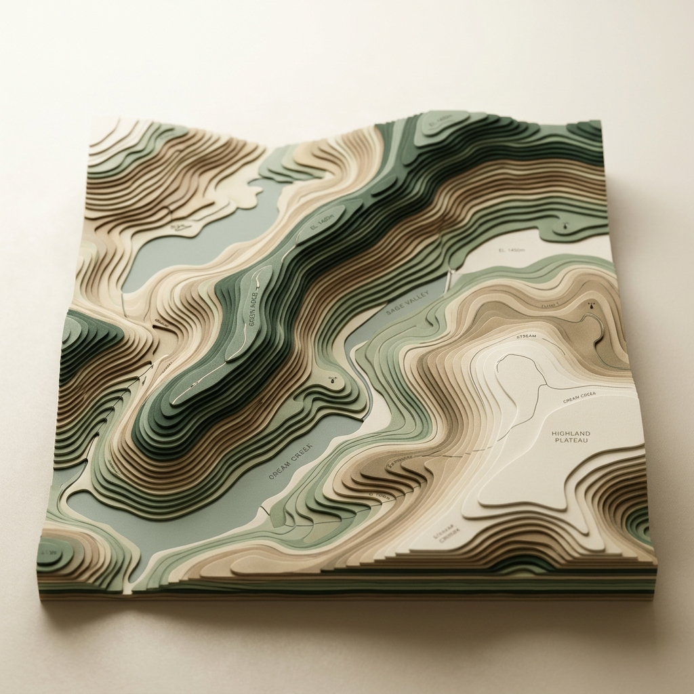
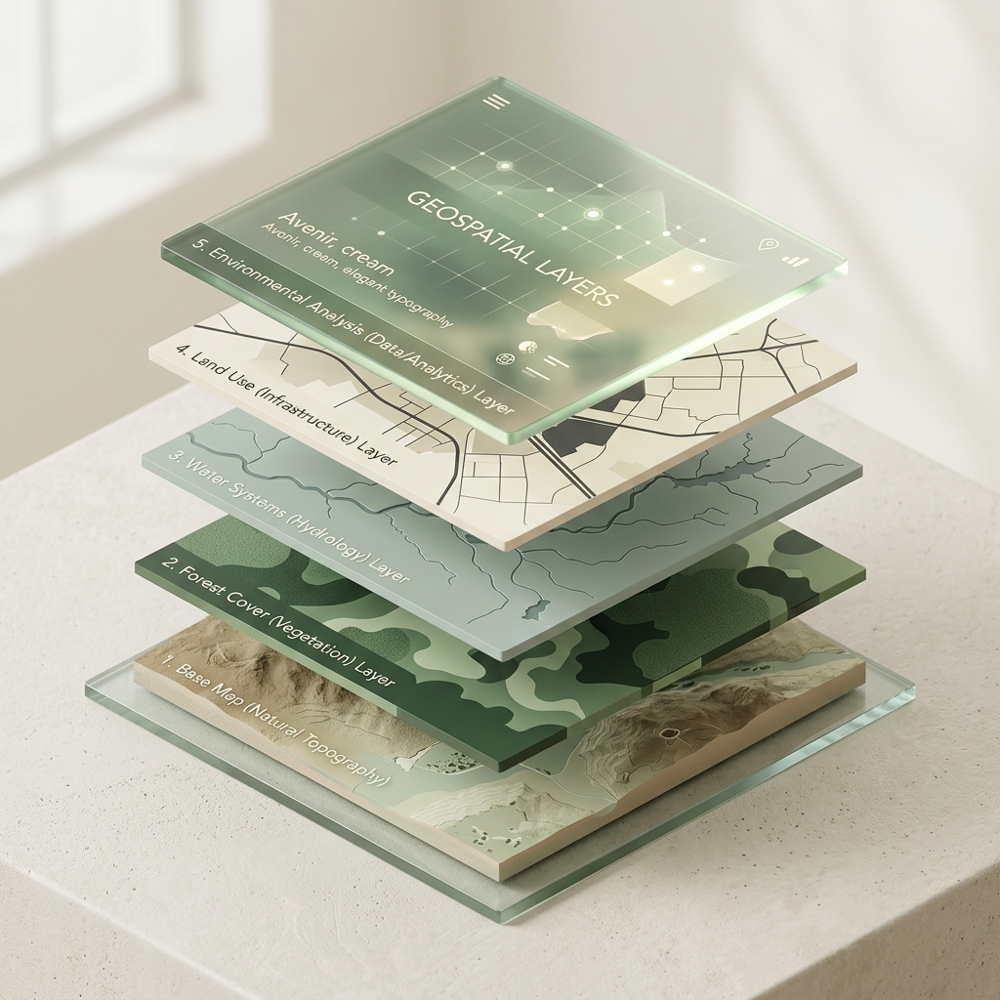

Lulusan Pendidikan Geografi dari Universitas Pendidikan Indonesia dengan spesialisasi Sistem Informasi Geografis (SIG), Data Geospasial, dan Penginderaan Jauh. Tersertifikasi BNSP sebagai Teknisi Penginderaan Jauh. Memiliki pemahaman kuat dalam data spasial, lingkungan, kebencanaan, dan survei. Berkomitmen untuk terus belajar dan menerapkan keahlian pada proyek berdampak. Geography Education graduate from Universitas Pendidikan Indonesia specializing in Geographic Information Systems (GIS), Geospatial Data, and Remote Sensing. BNSP Certified Remote Sensing Technician. Strong understanding of spatial data, environment, disaster management, and surveying. Committed to learning and applying skills to impactful projects.

Spesialisasi di bidang pemetaan, analisis keruangan, dan manajemen kebencanaan. Specialized in mapping, spatial analysis, and disaster management.
Geographic Information System Analyst & Specialist. Berpengalaman dalam pemetaan batas wilayah, lahan, dan digitasi peta dasar kawasan dengan validasi lapangan. Geographic Information System Analyst & Specialist. Experienced in mapping boundaries, land parcels, and digitizing base maps with ground-truth validation.
Tersertifikasi BNSP sebagai Teknisi Penginderaan Jauh. Mengolah data satelit, pemutakhiran data tutupan lahan, dan analisis spasial lingkungan. BNSP Certified Remote Sensing Technician. Processing satellite data, updating land cover data, and conducting environmental spatial analysis.
Analisis spasial kebencanaan (Tsunami, Banjir, Longsor), pemetaan kemiringan lereng, penentuan titik shelter, dan jalur evakuasi berbasis data keruangan. Spatial hazard analysis (Tsunami, Flood, Landslide), slope mapping, shelter point determination, and spatial-based evacuation routing.
Delineasi dan Inventarisasi Bidang Tanah: Manajemen data spasial
end-to-end, termasuk delineasi dan inventarisasi kepemilikan lahan ROW SUTT 150 Kv KEK Kendal berdasarkan
data Stake Out lapangan.
Visualisasi Data: Memvisualisasikan hasil pengolahan data
bidang tanah untuk keperluan proyek ROW.
Land Delineation and Inventory: End-to-end spatial data management,
delineating and inventorying land ownership for ROW SUTT 150 Kv KEK Kendal based on field Stake Out
data.
Data Visualization: Visualizing processed land parcel data for the ROW
project.

Visualisasi WebGIS: Berkontribusi mengembangkan WebGIS Dingo Baiting
Maps 2030 untuk memvisualisasikan data satwa di New South Wales dan Victoria,
Australia.
Otomatisasi Data Python: Membangun alur otomatisasi data spasial
menggunakan Python untuk menyiapkan dataset terstruktur demi kemudahan analisis dan pengembangan
WebGIS.
WebGIS Visualization: Contributed to the WebGIS Dingo Baiting Maps
2030, visualizing wildlife data in NSW and Victoria, Australia.
Python Data
Automation: Built automated spatial data workflows using Python to prepare structured datasets,
supporting analysis and WebGIS deployment.
WebGIS Project
Pemutakhiran Data Citarum Hilir: Digitasi onscreen, topology check,
pembaruan toponimi, dan ground truthing kawasan seluas 12.000 hektar (Peta Tutupan Lahan, Peta
Survei).
Analisis Kepadatan Bangunan: Analisis spasial kepadatan bangunan dalam
kawasan Citarum Hilir.
Citarum Hilir Data Update: Onscreen digitizing, topology checks,
toponymy updates, and ground truthing for a 12,000-hectare area (Land Cover Maps, Survey
Maps).
Building Density Analysis: Spatial analysis of building density in the
Citarum Hilir region.
Tertarik dengan keahlian pemetaan dan pengolahan data keruangan saya? Silakan hubungi saya melalui email atau platform profesional lainnya. Interested in my mapping and spatial data processing expertise? Feel free to contact me via email or other professional platforms.